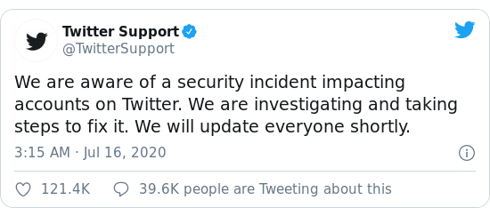

Twitter hacked
No technology is secured, until humans are involved
-- by the Art of Social Engineering
Intro
What would be your reaction if I tell you “I want to give back to my community and whoever pays me in next 1 hour, I will double and pay back !!” you would think I am Crazy right and go away, but what if the same thing Elon Musk, Jeff Bezos, Barack Obama, Apple company, Bill Gates, Joe Biden, Uber company and many such more high profile peoples and organization tells you. If your human you will definitely fall for it.
This was the incident, which took place on July 15 2020 **The Great Twitter hack of all time**
130 verified accounts were hacked on Twitter and tweeted the same tweet, donate me and I will double it!
But the question comes in mind is, how the hell this big tech giants get hacked int the first place! They are supposed to have the best Security to keep safe the data of millions of Users across the globe. The answer is “You can have the best security in your infrastructure but the weakest chain ever will be the Humans, no matter what!!” The attack called Social Engineering is the key factor for every big Cyber Attack we have ever witnessed.
Attack
What is Social Engineering in first place?
In layman words, Social Engineering is the act of manipulating the Humans to break standard security practices & let attacker have control at our social && professional life. lets say, If I ask you for your Facebook password the chances of you giving it would be 0.00% Obviously, which idiot would give their credentials, but with the help of Social Engineering attack this is possible. The attackers manipulates the victim with the mean of Emotional drama, Financial Exchange, Black mailing, Threatening, Faking Identity and countless other techniques.
The Security team @Twitter stated that the group of Hackers targeted Twitters Employee with the Social Engineering Attack and got Admin Access in Twitters Internal Infrastructure which allowed attackers to have complete control over twitter and its users account.
As soon as the Twitter came to know about the attack, they blocked all the Verified Twitters Account from taking any actions on their own account for security reasons. This tells us that even if you own our account, Twitter and similar Social-networking sites has the Ultimate control over it.
This Attack cost just $110K, which makes me laugh, by having ultimate control over total Twitter what not could not have been possible, this also makes me think “Was money the real Intention behind this attack or this would be the beginning of something worst to come?”

By now, twitter has recovered all their data and is safe to use üôÇ or is it?
Thank you giving your time and reading my blog, if you liked it tell me in comment section below and see you in the next t blog till that have a good day babye!!
© hackkeencyber